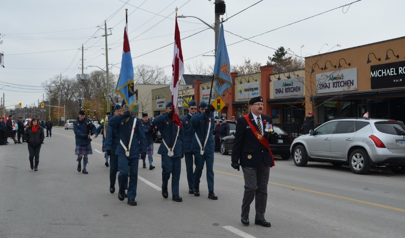
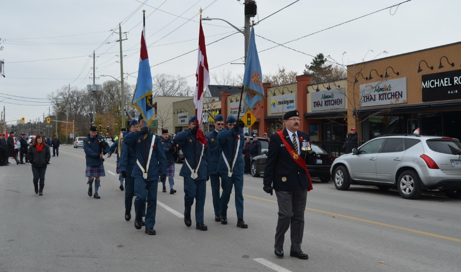
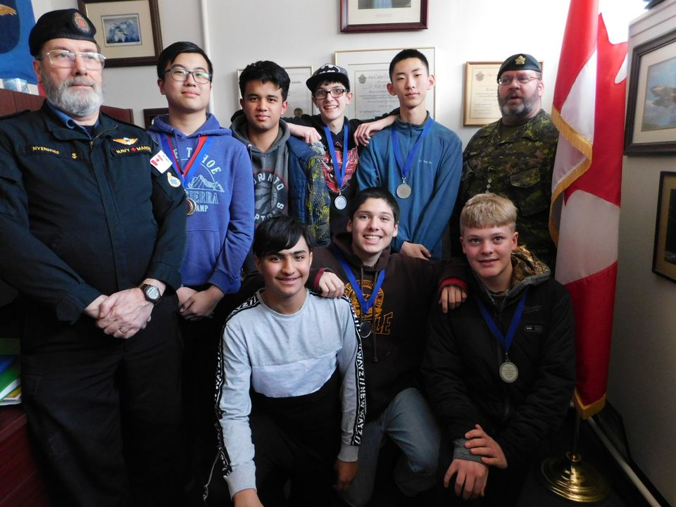
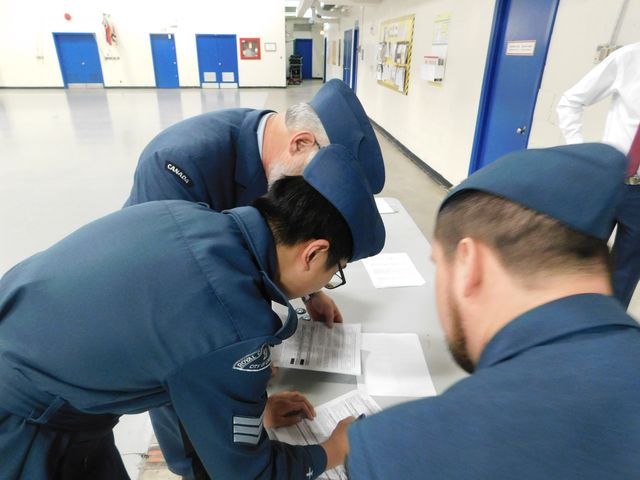
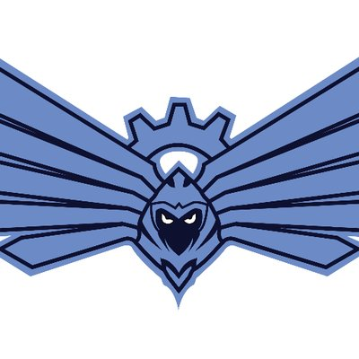
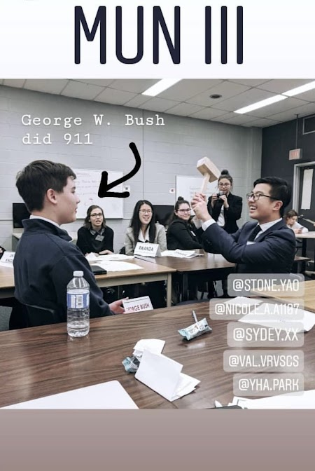
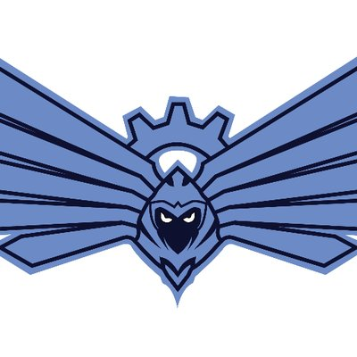
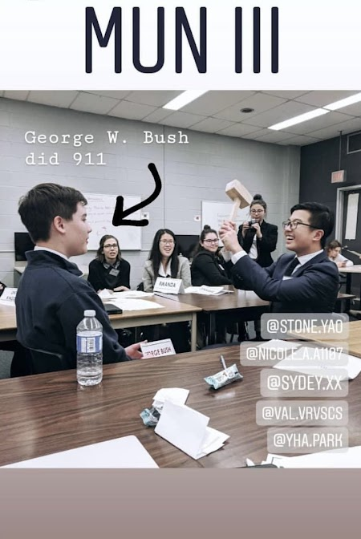

About
About Me
Hi there!
I'm Stone Yao, a grade 12 student currently studying at A.B. Lucas SS in London, Ontario. I'm an excellent student who has a high standing average mark within the school. I am also honoured to be one of the top 10 ranking students by grade in my high school. I have a great passion for computer science and mathematics. I am an incoming to the University of Waterloo for Computer Science Co-op for the class of 2027.
I'm Stone Yao, a grade 12 student currently studying at A.B. Lucas SS in London, Ontario. I'm an excellent student who has a high standing average mark within the school. I am also honoured to be one of the top 10 ranking students by grade in my high school. I have a great passion for computer science and mathematics. I am an incoming to the University of Waterloo for Computer Science Co-op for the class of 2027.
Personal Details:
-
Name:
Lei(Stone as preferred) Yao
Age:
18
Ethnic background:
Han Chinese
Languages:
I can speak both Mandarin and English fluently
Educations:
University of Waterloo Honors Computer Science Co-op (Sept 2022-Present)
I am an incoming first-year student at the University of Waterloo, studying computer science at David R. Cheriton School of Computer Science. I have great interest in Artificial intelligence and Machine Learning algorithm. I am hoping to pursuit graduate school in USA after graduation.
A.B. Lucas S.S (Sept 2018-July 2022)
A.B. Lucas is the current school I am studying right now. I am currently in my last year of high school, and I plan to graduate in July 2022. During my time in school, I enjoyed doing science, math and CS-related course. I graduated with a final top six average of 98%.
Masonville Public School (Jun 2016-July 2018)
Masonville is the school where I got my primary school diploma. I started attending the school at the end of grade 6, in Jun 2016, when my family moved to London, Ontario, from PEI. At Masonville, I finished my ESL learning and prepared for high school.
Sherwood Elementary School (Sept 2014-Jun 2016)
Sherwood was the first school I attended in Canada when I emigrated from China to Canada. I did grade 5 and most of grade 6 years in this school before moving from PEI to Ontario. I also started learning ESL at this school.
Changzhou Experimental Elementary School (Sept 2009-July 2014)
It is the elementary school where I study back in China before moving to Canada. I spent four years in this school, from grade 1 to grade 4.
Coding Skills:
- Visual Basic
- Python
- Java
- Javascript
- CSS/HTML
- C/C++
Things/extracurricular I do
Outside School Extracurricular:
I have been a part of the Air Cadets program since grade 7. My rank is currently Flight Sergeant, and I am waiting to get Warrant Officer Second Class. I have been a part of the flag party as a guard. I attended the remembrance day parade and guarded the memorial overnight. I have also taken leadership roles such as second in command, flight commander and deputy squadron warrant officer, where I command a group of cadets on parades and regular training. I am also an instructor, and on a typical weekly training night, I would teach lessons to lower-level cadets. I also passed the harshed selection of exams, file reviews and in-person interviews and got my offer to the pilot scholarship program. However, with the sudden appearance of COVID-19, I could not attend.
I have been with the cadet marksmanship team since grade 8. While being on the team, I attended competitions every year. Throughout the various competitions, I achieved a team bronze, a team silver and an individual bronze. My marksmanship skills improved throughout the years. I started as a backup member and worked my way up to the team's top shooter. I'm classified as a distinguished Marksman (top-level). Being one of the few distinguished Marksmen in my local squadron, I am happy and willing to pass my knowledge and experience in marksmanship down if in-person training resumes.

I have been with the cadet marksmanship team since grade 8. While being on the team, I attended competitions every year. Throughout the various competitions, I achieved a team bronze, a team silver and an individual bronze. My marksmanship skills improved throughout the years. I started as a backup member and worked my way up to the team's top shooter. I'm classified as a distinguished Marksman (top-level). Being one of the few distinguished Marksmen in my local squadron, I am happy and willing to pass my knowledge and experience in marksmanship down if in-person training resumes.

2019 Byron Remembrance Day Parade

2020 Markmanship Zone Competition

2020 Signing off Documents for Pilot Scholarship
Inside School Extracurricular:
For in-school extracurriculars, I participate in Robotics and Modle UN club. Because of the appearance of COVID-19 extracurricular in school was disrupted.
I am currently on my school's robotics team, and I'm a part of the coding team. Although I had been planning to join the team a few years ago, due to COVID-19, I was only able to join the team this year. Currently, I am the website manager in the coding team, where I manage and update the website based on the team's needs. Our teams website link is http://team6854.com/. I am also learning how codes work on our robots as I will also be contributing codes to our newly built robots.

Model UN is one of the first clubs I joined when I started high school. I Loved the concept of simulating debates in the UN setting and enjoyed having meaningful discussions with peers. I attended many different conferences and tried solving real-world issues that had happened. Although due to the recent reform of the club, there aren't exactly any executive members. I am still taking a leadership role within the club. As a veteran member of the club, I took the responsibility of delivering general knowledge such as formality and the flow of the debate. I also had chances to help monitor and lead a few club meetings and discussions.

I am currently on my school's robotics team, and I'm a part of the coding team. Although I had been planning to join the team a few years ago, due to COVID-19, I was only able to join the team this year. Currently, I am the website manager in the coding team, where I manage and update the website based on the team's needs. Our teams website link is http://team6854.com/. I am also learning how codes work on our robots as I will also be contributing codes to our newly built robots.

Lucas Robotics team (FRC6854) logo
Model UN is one of the first clubs I joined when I started high school. I Loved the concept of simulating debates in the UN setting and enjoyed having meaningful discussions with peers. I attended many different conferences and tried solving real-world issues that had happened. Although due to the recent reform of the club, there aren't exactly any executive members. I am still taking a leadership role within the club. As a veteran member of the club, I took the responsibility of delivering general knowledge such as formality and the flow of the debate. I also had chances to help monitor and lead a few club meetings and discussions.

2019 Lucas Model UN conferences (I'm on the right)
Accomplishment
In School Accomplishment/Awards:
-
2022
- 5 on AP Calculus AB final exam
- 5 on AP Statistics AB final exam
- AP Scholar Award
- Canadian Computing Competition 2022 Certificate
- Canadian Computing Competition 2022 School Champion Medal
- Euclid 2022 Certificate
- Euclid 2022 City Honor Roll
- CI Cathy McKegney Award (Cadet)
- OBEA Website Development Sr. Champion
- Grade 12 Honour Roll Award of Excellence
- OSSD
-
2021
- 2020 Hypatia Certificate
- Grade 11 Honour Roll Award of Excellence
- Grade 11 Top 15 Highest Standing Student
- Highest Standing in Grade 11 Introduction to Computer Science
- Flying Scholarship Award (Cadet)
- Core Javascript and Canvas Programmer Certificate
- Power Pilot Scholarship (Cadet)
- 5 on AP CS A final exam
-
2020
- Grade 10 Honour Roll Award of Excellence
- Grade 10 Top 10 Highest Standing Student
- Highest Proficiency in Semester II Grade 10 Academic Science
- Highest Standing in Semester I Grade 10 Introduction to Computer Studies
- Top Level 4 Award (Cadet)
- Top Marksmen Award (Cadet)
-
2019
- Grade 9 Honour Roll with Distinction
- Regional School Board Math Contest Team 3rd
- Beaver Computing Contest Top 25%
- Marksmanship Competition individual 3rd (Cadet)
- Marksmanship Competition Team 2rd (Cadet)
- Glider Pilot Scholarship (Cadet)
-
2017
- Marksmanship Competition Team 3rd (Cadet)
Projects I Have Done